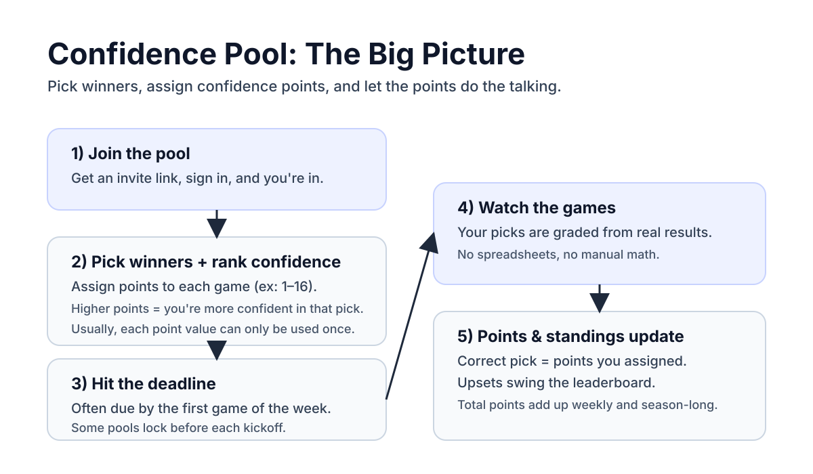

What is a confidence pool?
A confidence pool is a weekly football pool where you pick the winner of each game and assign a confidence value to every pick. If your pick wins, you earn the points you assigned. The goal is to score more total points than everyone else.
Quick example
You pick the Bills to win and assign 16 confidence points. You pick the Bears to win and assign 3 points. If both win, you get 19 points. If the Bills lose, you lose the 16 points you were counting on.
Related
Want the simpler version first? Learn the most common Pick'em formats.
Why people love it
- It adds strategy. You are not just picking winners. You are choosing where to take risk.
- Upsets hit harder. A surprise loss can swing the leaderboard when it was someone's high-confidence pick.
- It stays simple. You do not need fantasy projections or deep analytics to have fun.
- Everyone stays alive. A bad pick hurts, but you can bounce back next week.
How it works
Here is the weekly loop:

The 2 most common confidence formats
1) Classic 1-N (Unique Points Each Week)
This is the standard format. Each week, you assign a unique confidence value to each game, for example 1 through 16 if there are 16 games. If your pick wins, you earn that many points.

Why it's popular
It rewards being right about your strongest opinions, not just the number of winners.
2) Confidence + Spreads (ATS)
Same idea, but picks are graded against the point spread instead of the outright winner. Favorites have to win by enough, and underdogs can lose and still cover.
Need a spread refresher? See how pool spreads work, including the weekly rule that spreads are set at the beginning of the week and stay fixed once posted.
Quick ATS example
BUF -4.5 vs NYJ +4.5
BUF must win by 5+ to cover. If BUF wins by 4 or loses, NYJ covers.
Beginner tips
- Start with Classic 1-N: it is the easiest to understand and the most common.
- Do not put your top points on coin flips: save big numbers for picks you really trust.
- Expect randomness: upsets happen, and that is the fun and the pain.
- Agree on rules early: deadlines, push handling, and tie-breakers should be clear.
Ready to run it with your group?